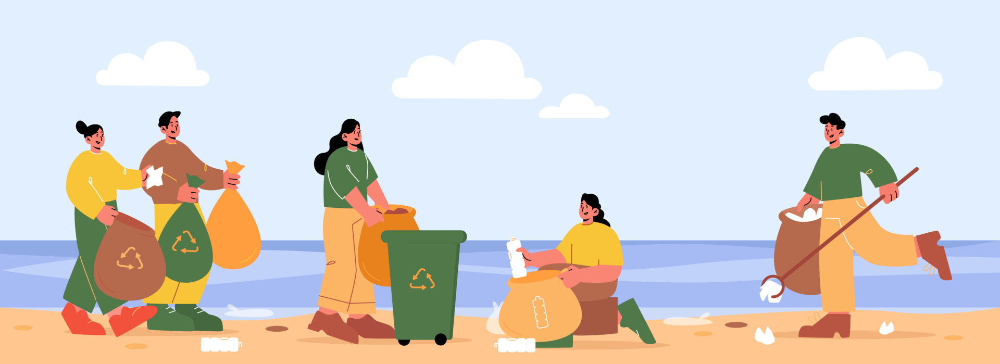

Waste Management and Recycling
The 3 R’s are definitely the savior of ocean health. With the increase in population, it is true that the waste produced would also increase significantly. As finding dumping grounds become more and more difficult, a lot of the wastes find their way to the ocean beds. These wastes that are dumped in the ocean remain there for a long time, affecting marine life.
One of the useful ways to reduce waste production is recycling. Before throwing things away, we could check if something is recyclable. Then the products that can be recycled can be taken to the recycling center nearby.
Reducing Plastic Production and Consumption
Wherever you live, the easiest and most direct way that you can get started is by reducing your own use of single-use plastics. Single-use plastics include plastic bags, water bottles, straws, cups, utensils, dry cleaning bags, take-out containers, and any other plastic items that are used once and then discarded.The best way to do this is by refusing any single-use plastics that you do not need. in addition to purchasing, and carrying with you, reusable versions of those products.
As important as it is to change our individual behaviors, such changes alone are insufficient to stop ocean plastic pollution. We also need legislation that reduces plastic production, improves waste management, and makes plastic producers responsible for the waste they generate. One such effort in the United States is the 2021 Break Free From Plastic Pollution Act, and there are state level initiatives to introduce extended producer responsibility (EPR) legislation that makes plastic producers and distributors responsible for their products and packaging at the end of life.
At the international level, hundreds of organizations and businesses worked with United Nations member states to enact a global plastics treaty, signed by 175 member states, that will set global rules and regulations to reduce plastic pollution. Legislation that limits, taxes, or bans unnecessary single use plastic items, such as plastic bags, takeout containers, and bottles, has been enacted in many places globally, and you can support the adoption of such policies in your community too.

Controlling Agricultural and Industrial Runoff
Runoffs, too, pollute the oceans immensely. To prevent this, the use of chemical fertilizers must also be controlled and regulated. It must be remembered that excess use of chemical fertilizers harms not only the soil but also the water bodies nearby and, ultimately, the ocean. These runoffs are so toxic that they can very easily kill marine life.
Responding to Oil Spills and Marine Waste
Advances in oil spill response include the use of bioremediation, absorbent materials, and mechanical recovery systems. International conventions such as MARPOL (International Convention for the Prevention of Pollution from Ships) regulate marine dumping and ship waste disposal to reduce ocean-based pollution sources.
Global Cooperation and Public Awareness
Public education is a pivotal component in engaging citizens to understand ocean pollution and its impacts. Informative campaigns can significantly raise awareness and encourage proactive behaviors among communities. A key characteristic of public education initiatives is their ability to motivate grassroots movements, which can have a rippling effect on policy. Despite its importance, reaching diverse audiences and addressing misinformation can be challenging.